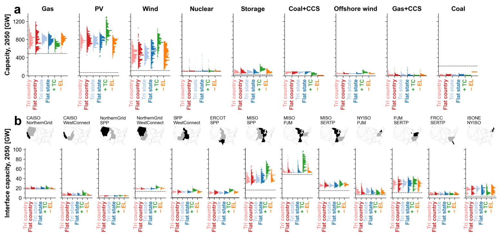
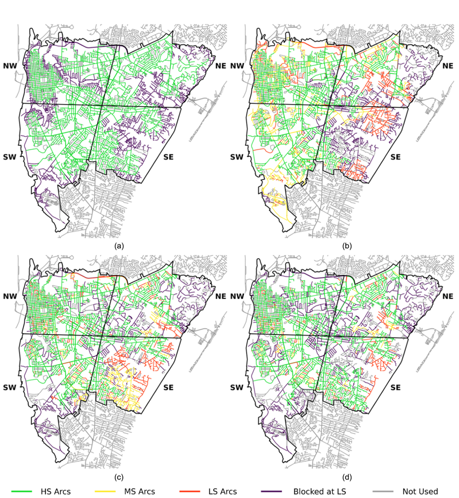
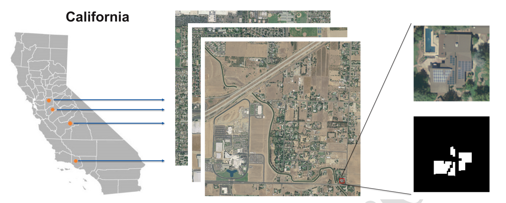
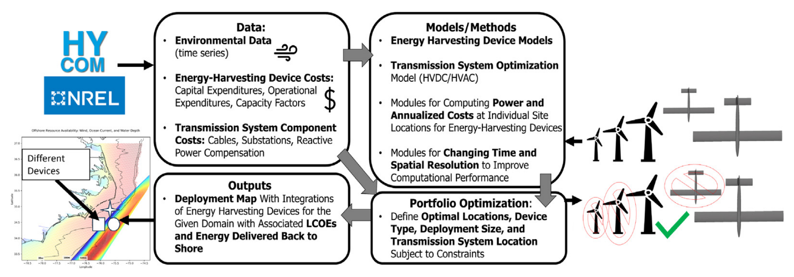
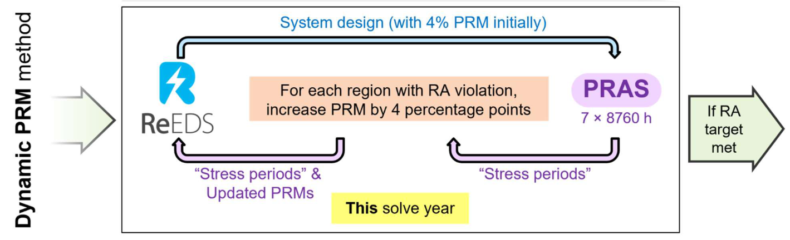
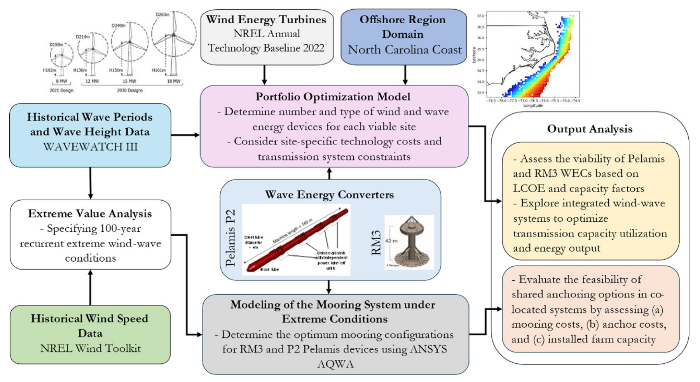
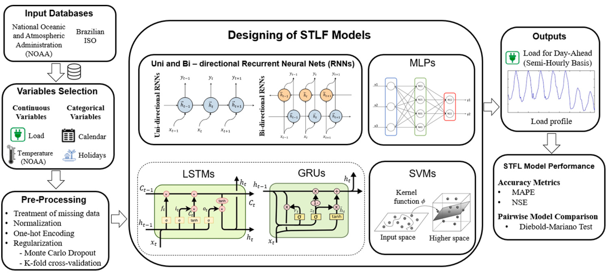
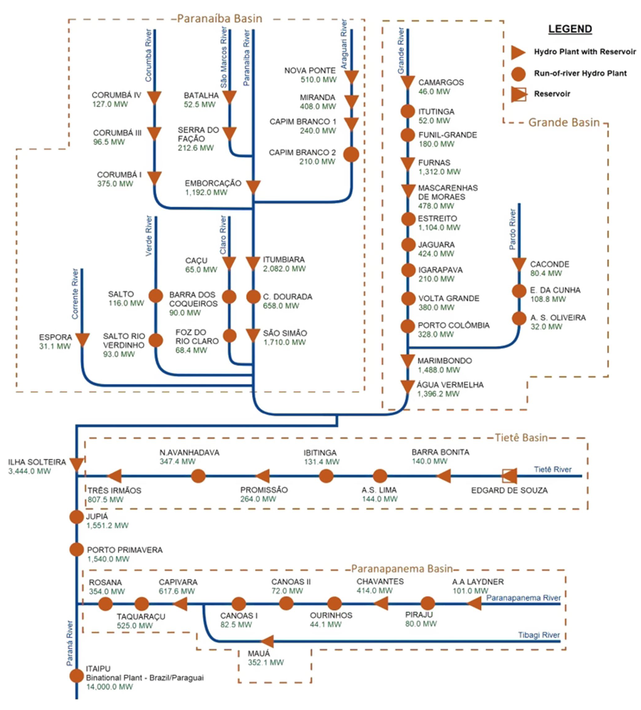
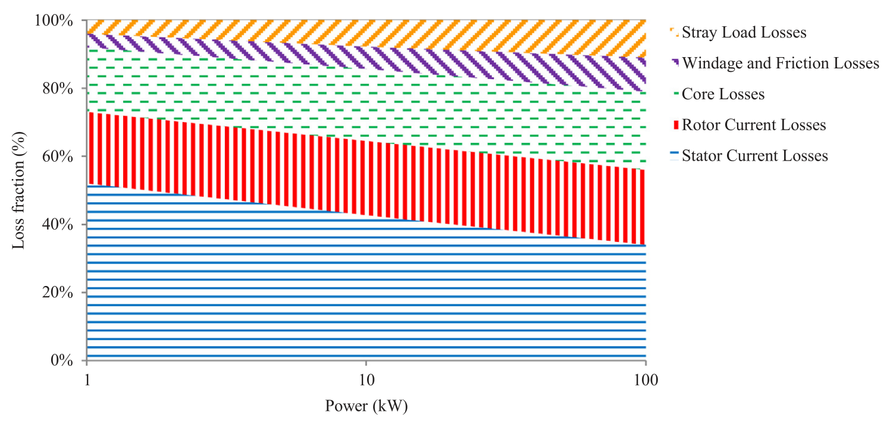

Projects
Research in energy systems, infrastructure resilience, and optimization. Each project describes the problem, methods, and findings, with links to papers and presentations.
17 entries

Uncertainty in electricity investment decisions
Across 1,137 ReEDS simulations, uncertain demand, fuel prices, technology costs, renewable siting, and policy assumptions produce a wide range of generation, storage, and transmission investments. Comparing these outcomes identifies trends that persist across scenarios and decisions that depend strongly on particular inputs.

Road network vulnerability under floods
A flooded road can disrupt trips far beyond its immediate surroundings. This project links stormwater simulations with time-dependent routing for 20,000 origin–destination pairs in Wilmington, North Carolina. Comparing three hurricanes with FEMA flood maps reveals how storm timing changes access, isolates neighborhoods, and shifts the importance of critical road connections.

Mapping distributed solar with computer vision
Mapping rooftop solar helps fill gaps in distributed-generation inventories. This collaboration with Yen-Hsi Chou compares computer-vision models and training methods for identifying panels in aerial imagery from four California cities. It also examines how inconsistent annotations affect the evaluation of model accuracy.

Joint marine energy portfolio, site, and device design
Device design, location, and transmission capacity determine how much offshore electricity reaches shore. A portfolio model selects among optimized underwater-kite designs and wind turbines, choosing devices and sites within an energy-cost limit. The North Carolina case study shows how complementary generation can make better use of shared transmission capacity.

Resource adequacy with more wind and solar
Weather and generator outages can leave a power system short of supply. Coupling ReEDS investment planning with probabilistic reliability assessment in PRAS allows those risks to inform regional reserve margins and investment decisions. The analysis compares the costs of stricter adequacy targets with the effects of renewable generation, demand growth, and transmission constraints.

Co-located offshore wind and wave energy
Wave devices could share space, anchors, and export cables with offshore wind farms. This study combines mooring simulations and portfolio optimization to assess the feasibility and value of co-location off North Carolina. It examines the tradeoffs in shared anchoring and the wave-technology cost reductions needed to improve transmission use economically.

Energy planning under hurricane risk
Hurricane exposure can change the cost and location of long-term electricity investments. This project links FEMA HAZUS wind information and technology fragility curves to a multistage stochastic TEMOA model of North Carolina. It compares investment pathways across damage scenarios, policy assumptions, and technology and fuel-price trajectories.

Mooring fragility under hurricane conditions
Rapid changes in ocean currents during hurricanes can impose severe loads on submerged turbines' moorings. Bayesian analysis of ocean measurements and mechanical simulations estimate the probability of exceeding mooring limits at different wind speeds. The case study shows why changes in current speed matter alongside the speed itself.

Energy storage in long term planning
How a planning model represents time affects its estimates of storage needs. TEMOA-Italy compares renewable availability, demand, and storage operation at different time resolutions and under different technology assumptions through 2050. In decarbonization scenarios that allow new storage and exclude nuclear generation, 8–13% of electricity passes through storage.

Neural networks for electricity demand forecasting
Day-ahead electricity demand forecasts support generation scheduling and electricity-price formation. This research compares feedforward and recurrent neural networks for Brazil's Central-Southeast market and tests NOAA temperature forecasts as model inputs. A companion review examines how forecasting methods fit into Brazil's operational planning.

AI scenario generation and risk-averse offshore portfolios
A renewable portfolio with low overall variability can still perform poorly on its lowest-generation days. Generative adversarial networks create correlated wind, wave, and ocean-current scenarios for more than 500 offshore locations. A portfolio model then selects sites to improve average output in the worst 5% of generation conditions.

Streamflow forecasting for interconnected hydropower systems
Neural-network forecasts draw on flow records across a river network to predict water availability at interconnected hydropower plants. This project develops a procedure for selecting useful inputs and evaluates forecasts up to 14 days ahead at 55 plants in Brazil's Paraná Basin. Training choices affect both forecast accuracy and the effort needed to fit the models.

Offshore renewable portfolio optimization for North Carolina
Offshore wind, wave, and ocean-current resources vary across locations and over time. This study evaluates more than 5,000 candidate sites to find portfolios that balance electricity cost and generation variability. Capacity expansion modeling then estimates their value to North Carolina's power system and the cost reductions needed for deployment.

Identifying synchronous-machine parameters under varying field voltage
Changes in field voltage can distort generator parameters estimated from a sudden short-circuit test. Building on my bachelor's thesis, this project develops a fitting method that accounts for those changes. It also identifies voltage-drop magnitudes and durations for which the conventional method stays within a chosen error tolerance.

Understanding efficiency improvements in induction motors
Motor manufacturers use different combinations of reduced electrical and mechanical losses to achieve higher efficiency. This EXCEN collaboration estimates equivalent-circuit parameters from catalog data to compare those strategies. The method separates stator and rotor effects and accounts for changes in rotor behavior with slip.

Climate change and hydropower revenues in Brazil
Changes in river flows affect both hydropower production and the energy a plant can sell. Linking regional climate projections, hydrological modeling, and system optimization reveals how these effects vary among Brazilian hydropower plants, with substantial geographic differences that national totals can hide.

Cooperative game theory for firm energy rights
Coordinated hydropower operation creates benefits that must be shared among plant owners. Combining cooperative game theory with an allocation rule based on each plant's incremental contribution helps balance incentives to invest and cooperate. A reformulated optimization model evaluates these allocations for a 170-plant representation of Brazil's hydropower system.
No entries match these filters. Try another year or topic.